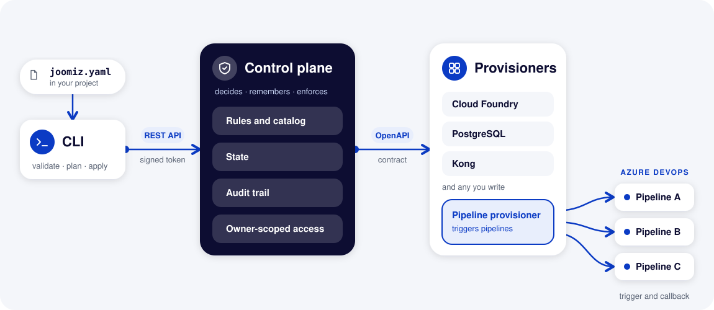

What Joomiz is
For feature teams and platform teams. Joomiz is a tool that allows platform teams to offer resources from a golden path to feature teams. You describe a service in one file. Joomiz checks the file, shows what a change would do, and then makes the change.
A golden path is a supported way to build a service. The platform team decides which golden paths exist.
The problem
Getting a service to production often means these jobs:
- Waiting for another team to create a database or a gateway route.
- Copying a pipeline from another project and editing it by hand.
- Passing secrets through tickets, chat or files.
- Making a change without seeing its effect first.
- Finding out who changed what from tickets and chat.
- Explaining all of this to an AI assistant, which cannot see tickets, chat or the pipeline that someone copied.
Each job is a hand-off between people. Hand-offs are slow, and they leave no clear record.
Many people now ask an AI assistant to help them write code and configuration. An assistant works well when it can read the whole task in one place and check its own answer. Scattered setup gives it neither. It guesses, and a wrong guess can reach production. An assistant that picks its own tools can also pick tools that the company has not approved.
The idea
Joomiz moves these jobs into one workflow with three ideas:
- One file. The file
joomiz.yamllives next to the code of the service. It says what the service needs. - One preview. The command
joomiz planshows a change before it happens. - One record. Every plan and every apply is saved as a run. The control plane also keeps an audit trail of who registered an application and who applied a change.
The feature team describes what the service needs. The platform team controls how it is provided: the rules, the state and the services that create real resources.
These ideas also suit AI assistants, for the same reasons that they suit people:
- One place to read. The whole request is one text file. An assistant does not need access to a pipeline, a ticket or a console.
- A schema to check against. The control plane publishes a JSON Schema for the file, and the editor tooling reads it. An assistant can run
joomiz validateand fix its own mistakes before anything happens. - Only approved tools. The platform team decides which resource types exist and which golden paths a service can follow. An assistant can only ask for what the platform team offers, and the control plane refuses everything else. Each person, and each assistant that works for them, acts with that person's own access, limited to their owner.
- A preview before any change.
joomiz planshows what would change and writes nothing. A person reads the preview and decides. - No secrets in the file. The file holds references, not values. You can show it to an assistant without sharing a password.
- A record of who did it. Every apply is a run, and the audit trail names the person who ran it. The platform team can see which changes came from whom.
The assistant writes the file. The platform's rules, the preview and the person who applies the change still decide what happens.
| Without Joomiz | With Joomiz |
|---|---|
| Requests and hand-offs between teams | One file next to the code of the service |
| Pipelines copied between projects | A golden path that the platform team maintains |
| Secrets passed between people | Secrets stay in a vault. Only a reference moves |
| No preview before a change | joomiz plan shows the change first |
| History spread over tickets and chat | A run for every plan and every apply |
The parts of Joomiz

The picture in words:
- You keep
joomiz.yamlin your project. - The CLI sends the file to the control plane through a REST API, with a signed token.
- The control plane holds the rules and the catalog, the state, the audit trail, and access that is limited by owner.
- The control plane calls the provisioners through an OpenAPI contract.
- A provisioner can trigger a pipeline and receive the result by callback.
The parts one by one:
- The file. The file
joomiz.yamlholds the application, its tooling, its artifacts, its environments and its resources. - The CLI. The
joomizcommand checks the file and sends it to the control plane. It runs on a laptop or in a pipeline. - The control plane. This service receives requests from the CLI. It applies the rules of the platform, keeps the state and records the audit trail.
- Provisioners. These are separate services that create the real resources. Each one follows the same OpenAPI contract. OpenAPI is a standard way to describe an HTTP API.
You write the file and run the CLI. The CLI calls the control plane with a signed token. The control plane calls the provisioners. Each provisioner does the work for the types that it handles.
Each provisioner chooses how it works. For example, one provisioner triggers pipelines in Azure DevOps and receives the result when the pipeline finishes.
Who does what
| Feature team | Platform team | |
|---|---|---|
| Job | Gets a service to run, with the resources it needs. | Offers resources to many teams and keeps the platform running. |
| Works with | The file joomiz.yaml and the CLI. | The dashboard, the provisioners and the catalog of types. |
| Role in the token | owner:<team> | operator |
A small team can be both. It then follows both paths.
A small example
This excerpt adds a PostgreSQL database to a service. The service reads the database password through a reference.
env:
# A reference, not a password. The value is known after the database exists.
DB_PASSWORD: "${{managed-resources.shop-db.outputs.password}}"
# A database that Joomiz creates and owns for this service.
managed-resources:
- id: shop-db
type: postgres
spec:
flavor: cf-plan-small
version: "16"
storage-gb: 20
multi-az: false
The password is not in the file. The text ${{ ... }} is a reference to an output of the database. Joomiz resolves the reference when it applies the change. The output is the address of a secret in a vault. It is not the secret.
The excerpt comes from the complete file quick-start-with-database.
Next
Learn how the things in Joomiz relate in How Joomiz works.